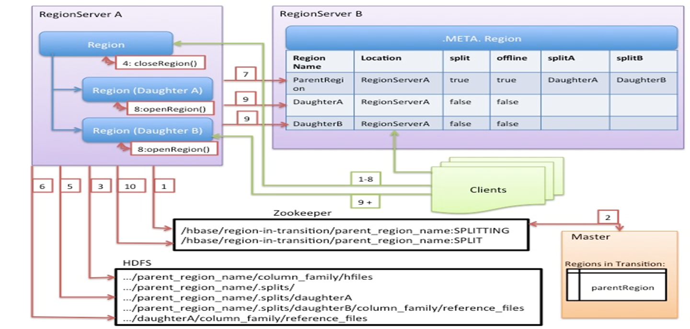
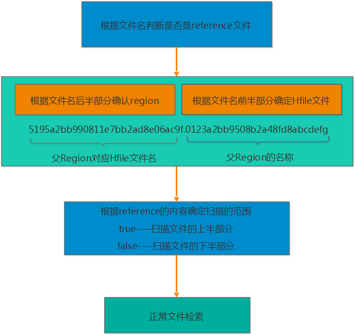
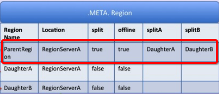

Ch12-HBase 之 Region Split
March 24, 2021
HBase Region Split 整个过程可以分为如下几步，触发 Region Split，寻找 SplitPoint，拆分 Region，等待 major compaction 删除旧的 Region
1. 触发 Region Split #
触发 Region Split 有好几种策略，比如除了 3 种默认过的策略，还有 DelimitedKeyPrefixRegionSplitPolicy、KeyPrefixRegionSplitPolicy、DisableSplitPolicy 等策略，这里只介绍 3 种默认的策略。分别是 ConstantSizeRegionSplitPolicy 策略、IncreasingToUpperBoundRegionSplitPolicy 策略和 SteppingSplitPolicy 策略。
1.1 ConstantSizeRegionSplitPolicy #
ConstantSizeRegionSplitPolicy 策略是 0.94 版本之前的默认拆分策略，这个策略的拆分规则是：当 region 大小达到 hbase.hregion.max.filesize（默认 10G）后拆分。 这种拆分策略对于小表不太友好，按照默认的设置，如果 1 个表的 Hfile 小于 10G 就一直不会拆分。注意 10G 是压缩后的大小，如果使用了压缩的话。
如果 1 个表一直不拆分，访问量小也不会有问题，但是如果这个表访问量比较大的话，就比较容易出现性能问题。这个时候只能手工进行拆分。还是很不方便。
1.2 IncreasingToUpperBoundRegionSplitPolicy #
这种切分策略微微有些复杂，总体来看和 ConstantSizeRegionSplitPolicy 思路相同，一个 region 中最大 store 大小大于设置阈值就会触发切分。但是这个阈值并不像 ConstantSizeRegionSplitPolicy 是一个固定的值，而是会在一定条件下不断调整，调整规则和 region 所属表在当前 regionserver 上的 region 个数有关系：(#regions) * (#regions) * (#regions) * flush size * 2，当然阈值并不会无限增大，最大值为用户设置的 MaxRegionFileSize。
从这个算是我们可以得出 flushsize 为 128M、maxFileSize 为 10G 的情况下，可以计算出 Region 的分裂情况如下：
第一次拆分大小为：min(10G，11128M)=128M
第二次拆分大小为：min(10G，33128M)=1152M
第三次拆分大小为：min(10G，55128M)=3200M
第四次拆分大小为：min(10G，77128M)=6272M
第五次拆分大小为：min(10G，99128M)=10G
第五次拆分大小为：min(10G，1111128M)=10G
1.3 SteppingSplitPolicy #
SteppingSplitPolicy 是在 Hbase 2.0 版本后的默认策略，，拆分规则为：If region=1 then: flush size * 2 else: MaxRegionFileSize。
还是以 flushsize 为 128M、maxFileSize 为 10 场景为列，计算出 Region 的分裂情况如下：
第一次拆分大小为：2*128M=256M
第二次拆分大小为：10G
从上面的计算我们可以看出，这种策略兼顾了 ConstantSizeRegionSplitPolicy 策略和 IncreasingToUpperBoundRegionSplitPolicy 策略，对于小表也肯呢个比较好的适配。
从上面的计算我们可以看到这种策略能够自适应大表和小表，但是这种策略会导致小表产生比较多的小 region，对于小表还是不是很完美。
2. 寻找 SplitPoint #
SplitPoint 规定为整个 region 中最大 store 中的最大文件中最中心的一个 block 的首个 rowkey。如果定位到的 rowkey 是整个文件的首个 rowkey 或者最后一个 rowkey 的话，就认为没有切分点。
3. 拆分 Region #

从上图我们可以看出 Region 切分的详细流程如下：
- 会 ZK 的 /hbase/region-in-transition/region-name 下创建一个 znode，并设置状态为 SPLITTING
- master 通过 watch 节点检测到 Region 状态的变化，并修改内存中 Region 状态的变化
- RegionServer 在父 Region 的目录下创建一个名称为 .splits 的子目录
- RegionServer 关闭父 Region，强制将数据刷新到磁盘，并这个 Region 标记为 offline 的状态。此时，落到这个 Region 的请求都会返回 NotServingRegionException 这个错误
- RegionServer 在 .splits 创建 daughterA 和 daughterB，并在文件夹中创建对应的 reference 文件，指向父 Region 的 Region 文件
- RegionServer 在 HDFS 中创建 daughterA 和 daughterB 的 Region 目录，并将 reference 文件移动到对应的 Region 目录中
- 在 hbase:meta 表中设置父 Region 为 offline 状态，不再提供服务，并将父 Region 的 daughterA 和 daughterB 的 Region 添加到 hbase:meta 表中，已表名父 Region 被拆分成了 daughterA 和 daughterB 两个 Region
- RegionServer 并行开启两个子 Region，并正式提供对外写服务
- RegionSever 将 daughterA 和 daughterB 添加到 hbase:meta 表中，这样就可以从 hbase:meta 找到子 Region，并可以对子 Region 进行访问了
- RegionServr 修改 /hbase/region-in-transition/region-name 的 znode 的状态为 SPLIT
备注：
为了减少对业务的影响，Region 的拆分并不涉及到数据迁移的操作，而只是创建了对父 Region 的指向。只有在做大合并的时候，才会将数据进行迁移。
4. 其他问题 #
4.1 reference 文件查找流程 #

- 根据文件名来判断是否是 reference 文件
- 由于 reference 文件的命名规则为前半部分为父 Region 对应的 File 的文件名，后半部分是父 Region 的名称，因此读取的时候也根据前半部分和后半部分来识别
- 根据 reference 文件的内容来确定扫描的范围，reference 的内容包含两部分，一部分是切分点 splitkey，另一部分是 boolean 类型的变量（true 或者 false）。如果为 true 则扫描文件的上半部分，false 则扫描文件的下半部分
- 接下来确定了扫描的文件，以及文件的扫描范围，那就按照正常的文件检索了
4.2 父 region 的数据什么时候会迁移到子 region 目录？ #
子 region 发生 major_compaction 时。我们知道 compaction 的执行实际上是将 store 中所有小文件一个 KV 一个 KV 从小到大读出来之后再顺序写入一个大文件，完成之后再将小文件删掉，因此 compaction 本身就需要读取并写入大量数据。子 region 执行 major_compaction 后会将父目录中属于该子 region 的所有数据读出来并写入子 region 目录数据文件中。可见将数据迁移放到 compaction 这个阶段来做，是一件顺便的事。
4.3 父 region 什么时候会被删除？ #
实际上 HMaster 会启动一个线程定期遍历检查所有处于 splitting 状态的父 region，确定检查父 region 是否可以被清理。检测线程首先会在 meta 表中揪出所有 split 列为 true 的 region，并加载出其分裂后生成的两个子 region（meta 表中 splitA 列和 splitB 列），只需要检查此两个子 region 是否还存在引用文件，如果都不存在引用文件就可以认为该父 region 对应的文件可以被删除。
4.4 Region 切分事务性如何保证？ #
HBase 2.0 之前基于状态机保证（未完全保证，仍可能会存在大量 RIT），HBase 2.0 之后基于内部分布式事务框架 Procedure V2(HBASE-12439) 保证。
